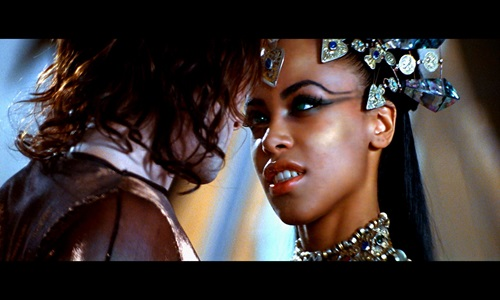
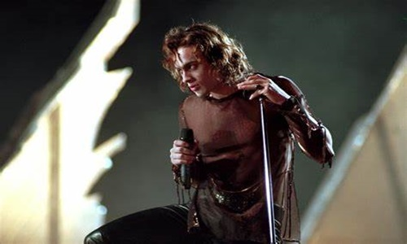
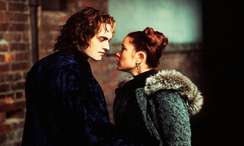

After losing interest in immortality, vampire Lestat goes to sleep, awakening after a long time to the sounds of punk rock. Taking up as the leader of an undead band, Lestat gains fame but exposes vampires, drawing the attention of vampire enthusiast Jesse. His music also awakens the queen of the damned, Akasha the first vampire, who decides to make Lestat her king. After learning of her bloodlust, and designs to take over humankind, Lestat teams with the other vampire nobility to take her down. Lestat then turns Jesse into his undead mistress to spend eternity together.


